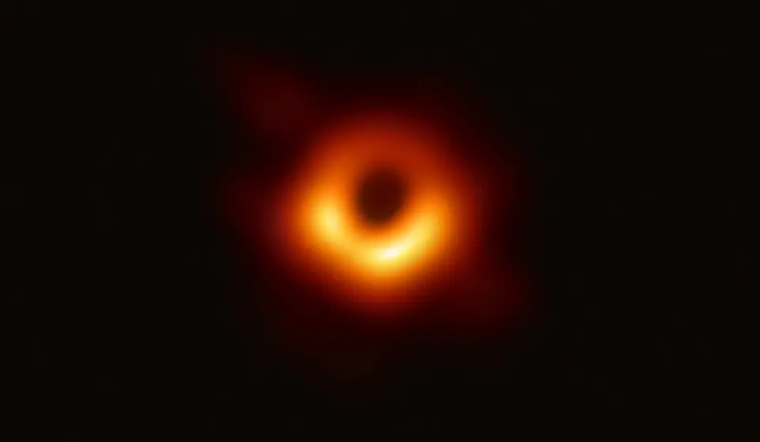
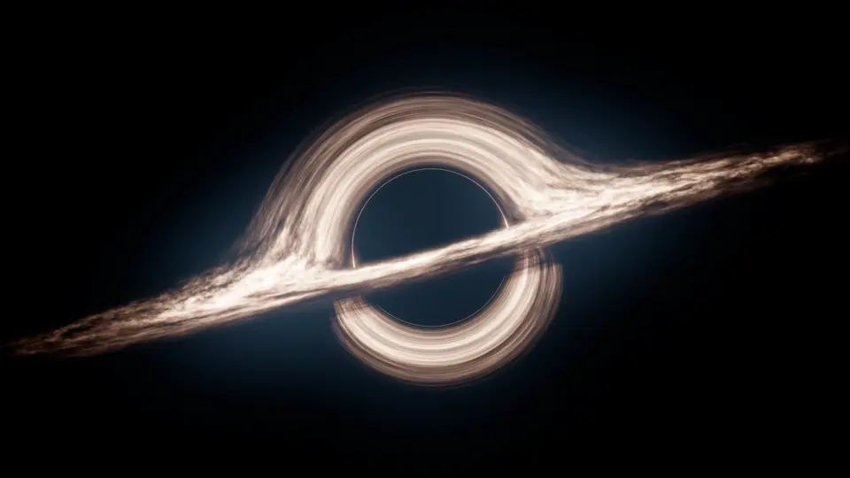

Supermassive Black Hole
Messier 87

There are four types of black holes:
Primordial or Micro: These are theoretical black holes that are extremely small. They are proposed to have formed shortly after the Big Bang. Their mass can be as small as 0.00001 grams!
Stellar mass (2-150 Solar masses): Stellar black holes form when a star collapses causing a supernova event. If the star is massive enough it can collapse into a black hole, if not it will form a neutron star instead. The minimum mass of a stellar black hole is understood to be the maximum mass of a neutron star.
Intermediate mass (100-100,000 Solar masses): These black holes a rarer than others. They are smaller than supermassive black holes but larger than Stellar mass ones. Physicists believe that these black holes are formed from collisions of globular and star clusters or from smaller black holes merging.
Supermassive (above 100,000 Solar masses): Supermassive black holes are believed to be the massive giants that exist in the center of galaxies holding them together. The Milky way has a supermassive black hole at its center called Sagittarius A.
Black Hole

Did You Know?
The largest black hole known is the one at the center of the quasar TON-618. It has an astounding mass of 66 billion Suns. That's over 15,000 times the mass of the black hole in the center of the Milky Way!
If you were to fall into a stellar black hole, the intense gravity would stretch you into a noodle shape called spaghettification. This is because the gravity near your feet is stronger than the gravity near your head, causing you to stretch.
Because the gravity near a black hole is so strong, it distorts the space-time around it. This means that time slows down as you get closer to it. If you spent just a few hours orbiting near a black hole's event horizon, people on Earth could experience decades or even centuries!